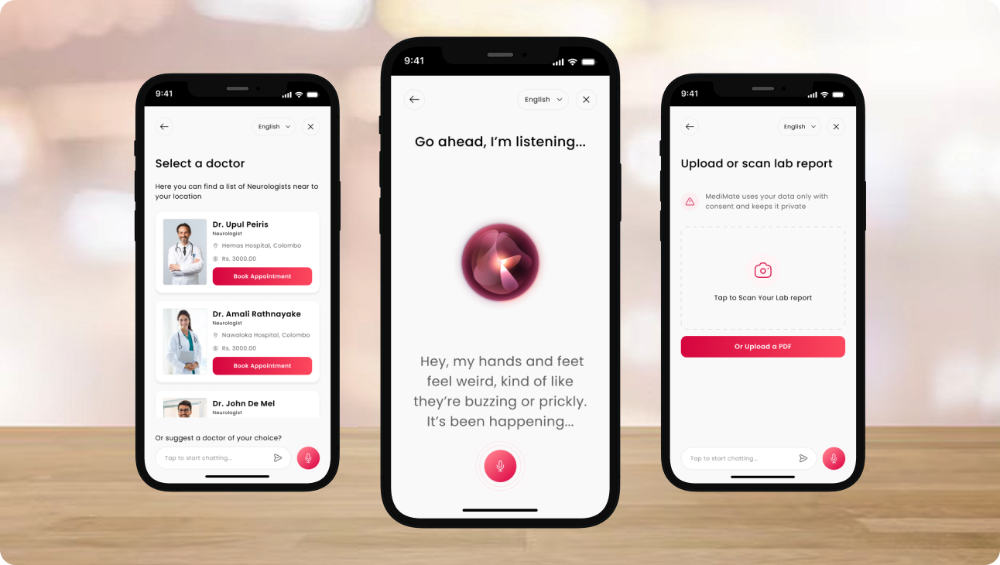
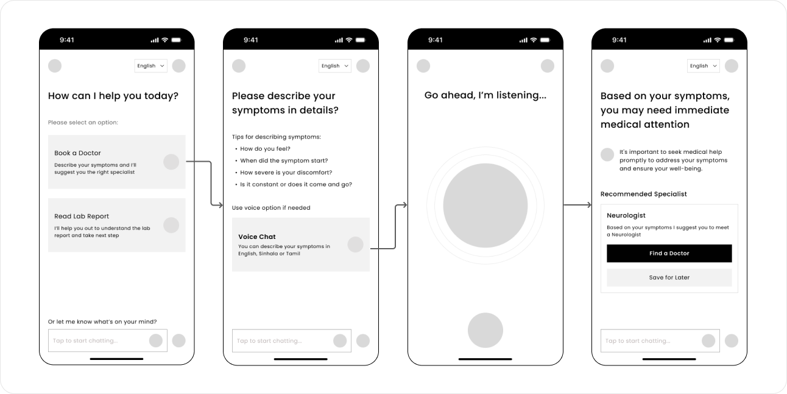
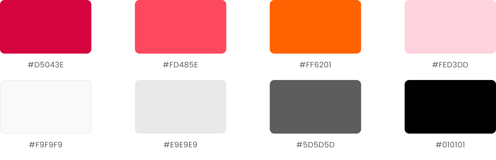

Enhancing the user experience of Doc990 through AI powered assistance
Doc990 is a leading digital healthcare platform in Sri Lanka, offering doctor channeling, order medicine , tele channeling and other medical services to millions of users. While the app provides great value, user feedback and research have revealed challenges, especially for elderly users and those with busy schedules.
This case study introduces MediMate, a conversational AI assistant integrated into the existing Doc990 app to make healthcare access smarter, faster, and more user-friendly.
My Role
- UX Designer
Problem Statement
DOC990 users need a more intuitive and inclusive healthcare experience because the current app lacks guidance in choosing the right specialist, delays access to lab report insights, and doesn’t support Sinhala or Tamil effectively. These gaps lead to confusion, delayed treatment, and reduced accessibility for a significant portion of users.
Research and Problem Identification
User Survey
To identify user pain points, goals and needs I conducted a usability survey and was able to collect 10 responses. The survey aimed to understand users current experience.


User Personas
User personas were created by considering demographics and characteristics of users to understand their pain points, goals and needs.


Proposed Solution - MediMate AI
To address the identified issues, MediMate, an AI-powered voice and chat assistant, is introduced within the Doc990 app. It combines natural conversation with quick-access button interactions to improve user experience.
- Allow users to book doctors through a simple chat and voice, streamlining the process with minimal taps and clicks.
- Read and interpret lab reports, providing easy-to-understand insights and wellness recommendations.
- Support English, Sinhala and Tamil making it inclusive and accessible to a wider audience.
Ideate the Solution
The following user flows were designed to ensure a seamless and intuitive experience for users interacting with MediMate AI within the Doc990 app.
Flow 1.0 - Main User Flow

Flow 1.1 - Doctor Booking Flow

Flow 1.2 - Read Lab Report

Design and Prototype
Wireframes
Color Palette
While blue and green are commonly used in healthcare apps for their calm and trustworthy feel, I chose to retain Doc990’s signature red as the primary color to maintain brand consistency and user familiarity. So I applied it selectively for key CTAs.
To avoid visual clutter, I balanced it with neutral backgrounds and clear visual hierarchy, ensuring a cohesive and accessible user experience.
Design and Prototype
Home Screen and Optimization
While addressing the main problem statement, I also identified a usability issue on the home screen of the Doc990 app. It displays 3 main options and 8 sub options along with the bottom navigation bar, creating a cluttered interface and increasing cognitive load especially for first-time users.
To simplify navigation and reduce cognitive effort, I revised the layout to show 5 key options prominently and grouped the remaining sub options under an “Other Services” section.
I also added a clear call-to-action (CTA) for the newly introduced MediMate AI feature, making it easily accessible from the home screen. These changes enhance visual hierarchy and result in a cleaner, more intuitive user experience.

1. Doctor Recommendations and Booking Based on Symptoms

2. Read Lab Reports

Usability Test and Feedback
I conducted usability testing with real users to evaluate the redesigned Doc990 app. The goal was to test the AI-based features and identify both improvements and remaining pain points. Feedback showed overall satisfaction, but also highlighted areas for further refinement.
Next Step
Next, I will address user feedback by improving key features, enhancing usability, and refining the overall experience. Further testing will be conducted to validate these changes and ensure the solution effectively meets user needs.